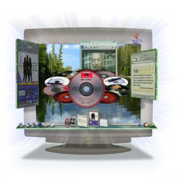

Uruchamianie Looking Glass pod Microsoft Windows
Project Looking Glass można uruchomić pod Windows!
Uruchamianie Looking Glass (LG3D) pod Microsoft Windows jest bardzo proste :-) Główna część LG3D jest zbudowana w oparciu o niezależną od platformy technologię Java, co oznacza że może działać na wielu platformach. Tak więc, można ją odpalić także na Windows (co prawda są pewne ograniczenia). Aby uprościć proces instalacji, powstał instalator LG3D w formie pliku exe. Ten dokument opisuje jak zainstalować i uruchomić LG3D na Twoim systemie Windows używając instalatora.
1. Wymagania sprzętowe
Najpierw sprawdź czy Twój system spełnia następujące minimalne wymagania:
| Komponent | Wymagania |
|---|---|
| System operacyjny | Środowisko było testowane na systemach Windows XP i Windows 2000 |
| Procesor | 1.4 GHz lub szybszy |
| RAM | 512MB |
| Karta grafiki | z akceleracją 3D, z minumum 32 MB wbudowanej pamięci VRAM oraz sterownik do obsługi OpenGL w wersji przynajmniej 1.3 (środowisko LG3D może być uruchomione na sterowniku OpenGL w wersji 1.2, ale wersja 1.3 jest zalecana do płynnego działania). 16 lub 32 bitowa głębia koloru. Przetestowane karty:
Jeśli udało się Tobie uruchomić LG3D na innej karcie, lub chcesz zgłosić problem z specyficzną kartą, prosimy zapostuj na forum dyskusyjnym |
| Miejsce na dysku | 250MB |
Ograniczenia na Windows
- Brak obsługi natywnych aplikacji dla Windows w świecie 3D ...
Mimo iż LG3D dla systemów Linuks oraz Solaris zawiera wsparcie dla uruchamiania natywnych aplikacji, mechanizm ten nie jest dostępny w wesji dla Windows. Oznacza to, że nie jest możliwe uruchamianie natywnych aplikacji Windowsowych w Looking Glass. Możesz jednakże, tworzyć i uruchamiać aplikacje dla LG3D , takie jak przeglądarka płyt CD i inne aplikacje w Javie. Innymi słowy, wersja dla Windows jest zaprojektowana w celu poznania środowiska i procesu wytwarzania oprogramowania dla LG3D , ale nie dla zastąpienia tradycyjnego pulpitu Windows.
2. Pobieranie instalatora LG3D
Instalator LG3D dla Windows instaluje wszystko co potrzebne do działania Looking Glass, w tym JRE (Java Runtime Environment) oraz pakiet Java 3D. Mimo iż rozmiar instalatora jest dość duży, uproaszcza on proces instalacji (miej na uwadze przepustowość Twojego łącza!).
Instalator może być pobrany z tego adresu:
Ściągnij z powyższego adresu plik exe zawierający instalator. Inne wersje są dostępne w sekcji >>Stable build<< na stronie z pakietami binarnymi .
3. Instalacja LG3D
Jak już to było wspomnane wcześniej, instalator LG3D dla Windows instaluje wszystko co potrzebne do działania LG3D, w tym JRE oraz Javę 3D. Ponadto dodaje folder LG3D do menu Start. Zwróć uwagę, że instalator umieszcza JRE i pakiet Java 3D w katalogu LG3D. Tak więc, proces instalacji nie ma wpływu na zainstalowane w Twoim komputerze środowisko Java.
- Przejdź do katalogu, do którego ściągnąłeś plik Instalatora (.exe) i go uruchom.
- Windows może wyświetlić okno dialogowe z ostrzeżeniem dotyczącym bezpieczeństwa informujące, że ten pakiet nie jest podpisany. Kliknij przycisk "Uruchom".
- Instalator wyświetli umowę licencyjną. Przeczytaj ją i kliknij przycisk "I Agree" (Zgadzam się) jeśli ją akceptujesz.
- Instalator poprosi o wskazanie katalogu gdzie ma zainstalować LG3D. Wybierz folder i naciśnij przyciski "Install" (Instaluj).
- Pojawi się pasek prezentujący postęp instalacji. Gdy proces instalacji się zakończy, kliknij przycisk "Close" (Zamknij).
Gdy instalacja zakończy się sukcesem, powinieneś zobaczyć zakłądkę "LG3D Project" w menu Start, zawierającą skrót służacy uruchomieniu LG3D, deinstalator oraz link do strony domowej projektu LG3D.
4. Uruchamianie LG3D

Po zakończonej sukcesem instalacji, możesz uruchomić LG3D z menu Start:
Start -> Programy -> LG3D Project -> Start LG3D Project
Po kilku sekundach, okno LG3D powinno się pojawić. Gratulacje! Jeśli napotkasz problemy, prosimy zapoznaj się z rozdziałem zatytuowanym Rozwiązywanie problemów .
Szybki kurs posługiwania się środowiskiem
Aby nauczyć się obsługi LG3D przeczytaj dokument: LG3D Pierwsze uruchomienie . Zwróć uwagę, że informacje zawarte w rozdziale "X Apps Specific Features" nie mają zastosowania w wersji dla Windows.
Poznaj środowisko Looking Glass i zacznij śnić o nowych sposobach wzbogacenia interakcji z użytkownikiem wykorzystując przestrzeń 3D! Jeśli będziesz gotowy aby zacząć programować, zapoznaj się z Przewodnikiem po Projekcie Looking Glass dla programistów .
Parę najczęściej zadawanych pytań
- Jak uruchomić LG3D ze zminimalizowanym oknem konsoli?
- Kliknij prawym przyciskiem myszy na skrócie odpalającym LG3D. Pojawi się menu.
- Wybierz "Właściwości". Pojawi się okno konfiguracji.
- W zakładce "Skrót", znajdź opcję "Uruchom:" . Wybierz "Zminimzalizowany" z rozwijanej listy.
- Kliknij "OK"
- Jak uruchomić LG3D w trybie pełnoekranowym?
- Kliknij prawym przyciskiem myszy na skrócie odpalającym LG3D. Pojawi się menu.
- Wybierz "Właściwości". Pojawi się okno konfiguracji.
- W zakładce "Skrót", znajdź opcję "Cel:" Dodaj -f na końcu (po znaku cudzysłowa). Ścieżka powinna wyglądać tak:
...\bin\lg3d-run.bat" -f - Kliknij "OK"
- Dalsza konfiguracja okna LG3D
- Przeczytaj dokument o zmianie rozmiaru i konfiguracji okna LG3D .
5. Rozwiązywanie problemów
Bardzo wolne odświeżanie
Karta grafiki w Twoim komputerze może być za słaba dla LG3D. Spróbuj przełączyć się na 16 bitowy tryb kolorów: Kliknij prawym przyciskiem myszy na pulpicie ->wybierz "Właściwości" ->wybierz "Ustawienia" w oknie "Właściwości Ekranu" ->wybierz "Średni (16bit) w sekcji "Jakość kolorów". Możesz także rozważyć aktualizację sterownika do Twojej karty grafiki. Wykorzystaj google.com, żeby znaleźć więcej informacji na ten temat (wpisz nazwę i typ swoeje karty).
Zobacz także: Project Looking Glass Developer's Release Notes
Więcej informacji o problemach może być znalezione korzystając z Issue tracker'a (ze strony głównej wybierz z menu po lewej stronie Project Tools -> Issue tracker.
6. Przydatne linki
Oto lista zawierajaca przydatne odnośniki do artykułów itp...
- LG3D Pierwsze uruchomienie
- Forum dyskusyjne LG3D
- Zgłaszanie błędów
- Jak być na bieżąco?
- Jak można pomóc?
- Lista podprojektów
- Wprowadzenie do Projektu Looking Glass (dla użytkowników systemów Linux i Solaris x86)
- Przewodnik po Projekcie Looking Glass dla programistów
- Zbiór tutoriali dla Projektu Looking Glass
- Projekt Looking Glass - Kompleksowy Przegląd Technologii (wersja angielska) (PDF 1.6MB)
- Inne zasoby
7. Parę słów na koniec...
Dziękujemy za zainteresowanie projektem i poświęcenie czasu na przeczytanie tego tekstu. Mamy nadzieję, że dołączysz do projektu i będziesz razem z nami cieszył się z poszukiwania nowych rozwiązań.
$Revision: 1.4 $ $Date: 2006-12-23 11:59:58 $